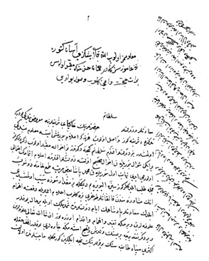

Belge 11: TKSA E.2457/26, veziriâzam ‘arzı
Belge 11
“Sa’âdetlü ve devletlü sultanım hazretlerinin hâkipây-i şerîflerine ma’rûz-i bendegî budur ki:
Tezkire-i şerîfinûz vâsıl olub her ne ki i’lâm buyrulmuş ise ma’lûm-i bendegî olmuşdur.
I. Benim devletlü efendim sultanım, gice ve gündüz bu ahvâle mukayyed olub zikr ve fikrimiz bu iken su’âl efendime i’lâm itmemek ihtimâli olur mu idi,
II. Nihayet ol sürülen Mehmed Paşa ba’zı mertebe tama’-ı hâma düşüb cümle taleb eyledüklerinüz size alıvireyim dimekle bir mikdâr söze sebeb olmuşdu, anın müşâveresinden kalkanlar doğru bize gelüb i’lâm itmeleriyle def’ine ihtimâm eyledik. Sa’âdetlü pâdişahımın eyyâm-i devletlerinde şimdilik öyle bir hâl yokdur;
III. ‘Ulûfelerin vermeğe takayyüd ve ihtimâm ve ikdâm üzereyüz, inşallâhu ta’âlâ ‘ulûfeleri virdiğimiz takdîrce birisinin Veledeş istemeğe çareleri yokdur, lûtf-i Hakk’la ekseri sipâh tayifesinin bu kullarının nice eyiliğin görmekte mâbeynlerinde olan kâl ü kiy ne ise işrâb iderler ve içlerine bu kulları başka adamlarım koymuşumdur ve bugüne değin bölüklerde üçbinden ziyâde âdeme ‘ulûfe virülüb ekserinün üçer kıstı verilmişdir; mahal tenk, bir mikdâr muzâyaka çekiyürüz; yine de merhametlü efendilerimin nazar-i şerîflerin ricâ iderim ve
IV. Taşrada olan çiftliğin berâtı ve hücceti hâk-i ‘izzetlerine irsâl olunmuşdur, fermân sultanımındır.
H. H. Kösem Sultan’ın emri:
“Ma’lûmumuz olub Allâhu ta’âlâ işinizi âsân getüre, du’âmız sizinledir, hemân hidmetine mukayyed olasın, berât hüccet dahi gelüb vusûl buldu.”
Yorum:
Kösem bir sorun üzerinde veziriâzama tezkire göndermiş, Paşa Kösem’i rahatsız eden bir sorun olmadığı hakkında güvence veriyor ve ahvâl doğru olsa kendisini mutlak haberdar edeceğini yineler. Sorun, sürgün edilen Mehmed Paşa ile ilgili olmalı. Kösem’e önem vermeyen Veziriâzam Sofu Mehmed Paşa azledilip Malkara’ya sürgün edilmişti (Haziran 1649).36Kösem, ocak ağalarından Kara Murad’ı veziriâzam atadı. Durum nâzikti, gönderdiği tezkirede kaygıları yazılmış olmalı.
36 Nâimâ, IV, s. 397-408.